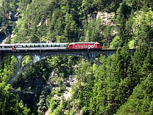
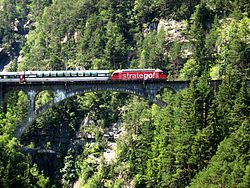

Commercial Music
Starting with the co-composition, recording, and production of the soundtrack to the feature film "Curiosity and the Cat" in 1998, I have worked on sound and music, mainly for corporational purposes, for such as SBB (Swiss national railway company), or Das Städel (one of Germany's most important art museums).
 
